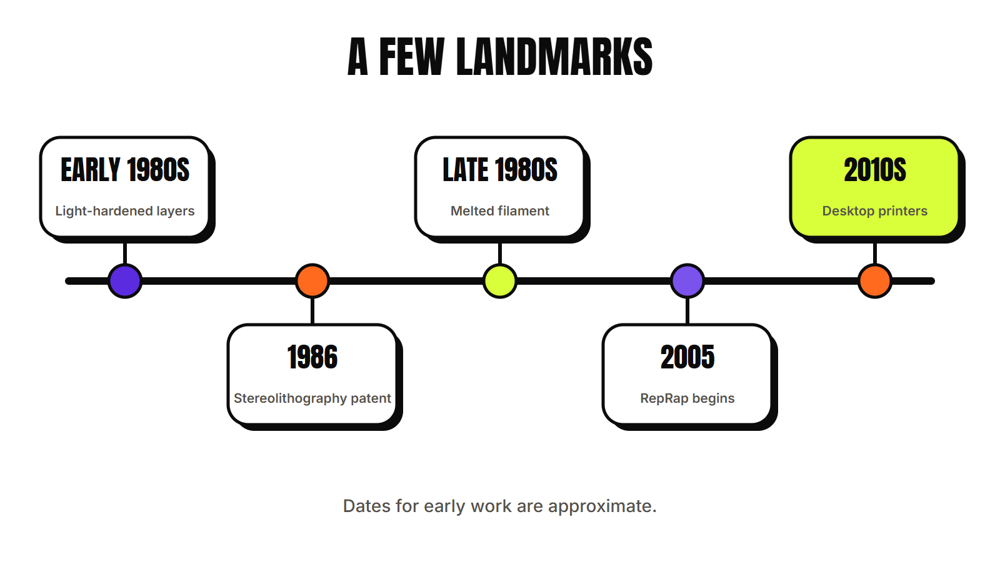
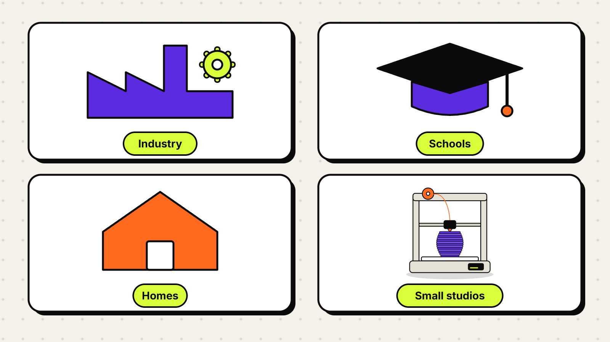

3D printing can feel like a recent invention, yet its roots go back several decades. What changed lately is not the basic idea but the price, the materials, and who can use it. Here is the story in plain language, from early experiments with light to desktop machines on ordinary desks.
Building objects layer by layer is old. Potters coil clay, and map makers stack contour sheets. The modern version needed three things: a computer model, a way to cut it into slices, and a machine that could add material precisely.
In the early 1980s, researchers including Hideo Kodama in Japan described ways of building solid shapes by hardening liquid plastic with light, one layer after another. The ideas did not turn into a commercial product at the time, but they showed the principle worked.
Chuck Hull developed stereolithography, using ultraviolet light to harden resin, and received a US patent for it in 1986. Hull co-founded a company, 3D Systems, which sold an early commercial machine. Hull is often credited with starting the industry, and the STL file format comes from this period.
In the late 1980s, S. Scott Crump developed a method that melts a plastic strand and draws each layer with it. Known as fused deposition modelling, it led to the company Stratasys. Today it is the most common method on desktop printers, often called FDM or FFF.

For years these machines were expensive and used mainly by manufacturers, designers, and research labs. Their main job was rapid prototyping: making a model quickly to check a shape before spending money on tooling. Other processes appeared too, including methods that fuse plastic or metal powder with a laser.
In 2005 Adrian Bowyer at the University of Bath started the RepRap project, an open effort to build a printer that could print many of its own parts. Designs were shared freely. Around the same time, key early patents on filament printing began to expire, which later let many new companies sell affordable machines.
Through the 2010s, kits and finished desktop printers became far cheaper. Hobbyists, schools, small studios, and families began printing at home. Online libraries of models grew, along with software that made slicing easier.

| Field | Typical uses |
|---|---|
| Product design | Prototypes and fit tests |
| Manufacturing | Jigs, fixtures, and short runs |
| Health and dental | Models and certified devices made under strict controls |
| Education | Teaching design and engineering |
| Home and craft | Organisers, repairs, decor, and gifts |
| Construction and aerospace | Specialised large or high-performance parts |
The specialised uses need industrial machines, approved materials, and testing. A desktop print should not be assumed to meet them.
Printing still takes time, still leaves layers, and still rewards good design. It is not a replacement for moulding when thousands of identical parts are needed, as our guide to printing and other methods explains. It is excellent at one-off pieces, small batches, and shapes that fit one particular need.
Knowing where the technology came from explains its habits. Light-based printing gives fine detail because light can be focused precisely. Filament printing is popular because it is clean and affordable. File formats such as STL date from the early days, which is why newer formats like 3MF were designed to fix their gaps.
Tip: Read "3D printed" as a method, not a quality grade. What matters is the material, the design, and how carefully the part was made.
Popular coverage once promised that every home would soon print everything it needed. That has not happened, and there are good reasons. Designing a part takes skill, many objects need several materials, and factories remain far cheaper for identical items in large numbers. What did arrive is quieter and useful: affordable prototypes, custom fittings, repairs, teaching tools, and small businesses that can offer made-to-order pieces without large stock. Judging the technology by those everyday uses gives a fairer picture than either the early excitement or the later disappointment.
No single person did all of it. Several people developed different methods. Chuck Hull is often named first because of the stereolithography patent and the company that followed.
Early patents expired, open projects shared designs, and electronics and motors became affordable. Together these let many new makers and manufacturers build simpler machines.
In everyday use, largely yes. Engineers tend to say additive manufacturing for the whole family of processes, including industrial ones that fuse metal or plastic powder.
It is commonly linked to stereolithography, the process it was created for. It remains one of the most widely accepted formats, although it stores neither units nor colour.
Predictions about this field have often been too bold, so treat them with care. Steady progress is more likely than sudden change: more dependable machines, a wider range of materials, better software for beginners, and wider use of printed jigs, spares, and custom fittings. The useful question stays the same: does printing solve this particular problem well?
Start with how 3D printing differs from paper printing, compare resin and filament, or turn your own idea into an object through the quote form.